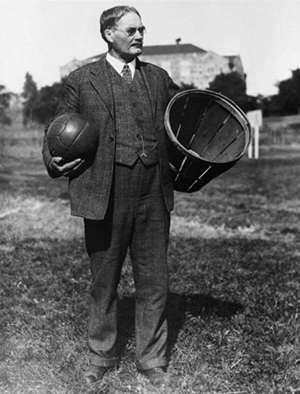

Зимой 1891 года студентам колледжа Молодёжной христианской асоции из Спрингфилда, штат Массачусетс, вынужденным выполнять гимнастические упражнения, считавшиеся в то время единственным средством приобщения молодёжи к спорту, было очень скучно на занятиях физического воспитания. Однообразию таких занятий необходимо было положить конец.
Выход из казавшегося тупиковым положения нашёл преподаватель колледжа Джеймс Нейсмит. 21 декабря 1891 года он привязал две корзины из-под персиков к перилам балкона спортивного зала и, разделив восемнадцать студентов на две команды, предложил им игру, смысл которой сводился к тому, чтобы забросить большее количество мячей в корзину соперников.
Идея этой игры у него зародилась ещё в школьные годы, когда дети играли в старинную игру «duck-on-a-rock». Смысл этой популярной в то время игры заключался в следующем: подбрасывая небольшой камень, необходимо было поразить им вершину другого камня, большего по размеру.
Игра, получившая название «баскетбол», лишь отдалённо напоминала современный вид спорта. Ведения мяча не существовало, игроки только перебрасывали его друг другу, стоя на месте, и стремились затем закинуть в корзину, причём исключительно обеими руками снизу или от груди, а после удачного броска один из игроков забирался на приставленную к стене лестницу и извлекал мяч из корзины. Целью доктора Нейсмита было создать игру именно коллективную, в которую можно было бы вовлечь одновременно большое количество участвующих, и этой задаче его изобретение отвечало в полной мере.
В 1892 году преподавателем физкультуры Смит-колледжа в Нортгемптоне (Массачусетс) Сендой Беренсон были разработаны первые правила женского баскетбола.

В баскетбол играют две команды, обычно по десять человек, от каждой из которых на площадке в одно и то же время присутствует пять игроков. Цель каждой команды в баскетболе — забросить мяч в корзину соперника и помешать другой команде овладеть мячом и забросить его в корзину своей команды.
Мячом играют только руками. Бежать с мячом, не ударяя им в пол, преднамеренно бить по нему ногой, блокировать любой частью ноги или бить по нему кулаком является нарушением. Случайное же соприкосновение или касание мяча стопой или ногой не является нарушением.
Победителем в баскетболе становится команда, которая по окончании игрового времени набрала большее количество очков. При равном счёте по окончании основного времени матча назначается овертайм (обычно пять минут дополнительного времени), в случае, если и по его окончании счёт будет равен, назначается второй, третий овертайм и т. д., до тех пор, пока не будет выявлен победитель матча.
За одно попадание мяча в кольцо может быть засчитано разное количество очков:
Игра официально начинается спорным броском в центральном круге, когда мяч правильно отбит одним из спорящих. Матч состоит из четырёх четвертей, длительность каждой 10 минут (двенадцать минут в Национальной баскетбольной ассоциации) с перерывами по две минуты. Продолжительность перерыва между второй и третьей четвертями игры — пятнадцать минут. После большого перерыва команды должны поменяться корзинами.
Игра может идти на открытой площадке и в зале высотой не менее 7 м. Размер поля — 28×15 м. Размер щита 180х105 см. От нижнего края щита до пола или грунта должно быть 290 см. Корзина представляет собой металлическое кольцо, обтянутое сеткой (без дна). Она крепится на расстоянии 0,15 м от нижнего обреза щита и 3,05 м от уровня пола. Установленная стандартами FIBA для мужских соревнований длина окружности мяча — 75—78 см, масса — 567—650 г .